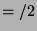

The results in this section are based on [NaishNaish2000b]. However, some definitions are changed slightly to make the subsequent treatment of negation simpler. We don't consider our semantics for definite programs particularly useful for programmers in its own right. However, this section introduces several things used in our semantics for normal programs and is useful for comparison purposes and any work on analysis of definite programs. We use a variant of definite clauses which we call disjunctive definite clauses (disjunctions only appear in the body, not the head), primarily so conjunction and disjunction can be treated more uniformly in the logic, though it also eases the transition to semantics for normal programs, as does our use of an equality predicate rather than head unification. We also use the constraint view of equality at some points, rather than substitutions. This avoids some technicalities and would make adding a ``not equals'' primitive simpler (something definitely worth doing if negation is supported).
Disjunctive definite programs can be mapped to definite clause programs trivially: each disjunct leads to a clause , where is without the initial calls to . Definite clause programs can easily be mapped to disjunctive definite programs by renaming variables, converting head unification into calls to the equality predicate and combining all clauses for a predicate into a single disjunctive clause. This is similar to the completion of a program [ClarkClark1978]. We use these equivalences implicitly when relating properties of disjunctive programs and their Horn clause counterparts.
An intended interpretation associates each ground atom with one of three
truth values: true, false or inadmissible . We sometimes abbreviate these to
. We sometimes abbreviate these to  ,
,
 and
and  (bold font). We also use these letters
in italics to refer to sets of user-defined atoms assigned that truth
value. When describing interpretations we use the notation
(bold font). We also use these letters
in italics to refer to sets of user-defined atoms assigned that truth
value. When describing interpretations we use the notation
 for the interpretation which maps the (ground) atoms in
for the interpretation which maps the (ground) atoms in
 to inadmissible, those in
to inadmissible, those in  to true and other user-defined atoms
to false
to true and other user-defined atoms
to false . Equality has
a fixed interpretation. is the set of all ground equality atoms
of the form
. Equality has
a fixed interpretation. is the set of all ground equality atoms
of the form  . These equality atoms are considered true; others
are considered false. This essentially restricts interpretations to be
Herbrand interpretations.
. These equality atoms are considered true; others
are considered false. This essentially restricts interpretations to be
Herbrand interpretations.
Programmers do need to consider the fact that their programs manipulate Herbrand terms. It can also be useful to think at a higher level, where terms may represent values in some other domain and two terms may represent the same value. However, Prolog does not respect this form of equality. Only syntactic equality is supported and programmers must write explicit equality predicates or convert terms into canonical form and be very careful with input-output modes. Although results for arbitrary models hold for definite programs, they typically do not hold when negation is introduced and arbitrary models are not very useful for programmers.
Inadmissible atoms may succeed or fail according to the procedural
semantics but this distinction is not made in the declarative semantics.
Our semantics is thus less precise than the traditional semantics,
to reflect the lack of precision of programmers. If we consider
calls to merge/3 where the first two arguments are sorted lists
then programmers typically know which ones should succeed. For other
(inadmissible) calls to merge/3, programmers typically don't
know and don't care precisely which calls succeed. Our semantics aims
at providing tools to reason about program correctness without the
need for additional precision and without unnecessary restrictions on
programming style. We define operational, model theoretic and fixpoint
semantics then discuss the relationships between them.